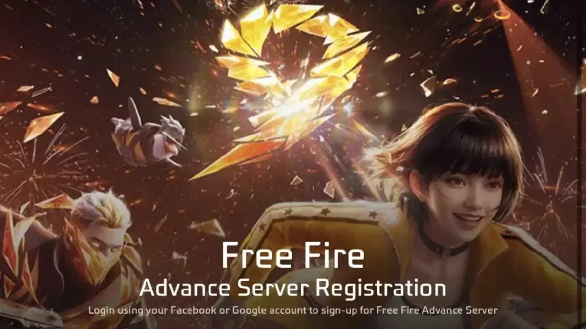

Servidor Avançado OB56 é esperado para novembro, mas Garena ainda não confirmou a data
Uma publicação recente estima uma janela em novembro com base nos ciclos anteriores. Não existe data oficial anunciada pela Garena até o momento.

O que está confirmado?
A versão atual é a OB55. A janela de novembro para o Servidor Avançado OB56 é uma estimativa baseada no histórico de testes e pode mudar.
Por que a data ainda não deve ser tratada como oficial
O Servidor Avançado é usado para testar recursos antes de uma atualização chegar ao jogo principal. Ciclos anteriores ajudam a estimar uma janela, mas não confirmam abertura de inscrições, início dos testes ou lançamento da OB56. Qualquer data específica permanece como previsão até uma publicação da Garena.
O que acompanhar
Os sinais que podem transformar a previsão em informação confirmada são a abertura oficial das inscrições, o período do servidor de testes e comunicados da próxima atualização. O FRIFAS BRASIL separa essas confirmações de rumores para não apresentar estimativas como calendário oficial.
Para o jogador brasileiro
Não é necessário tomar nenhuma ação com base apenas nesta previsão. O mais seguro é aguardar os canais oficiais do Free Fire e conferir as informações verificadas quando houver disponibilidade e datas confirmadas.
Status editorial: A CONFIRMAR.
Consultar publicação original →